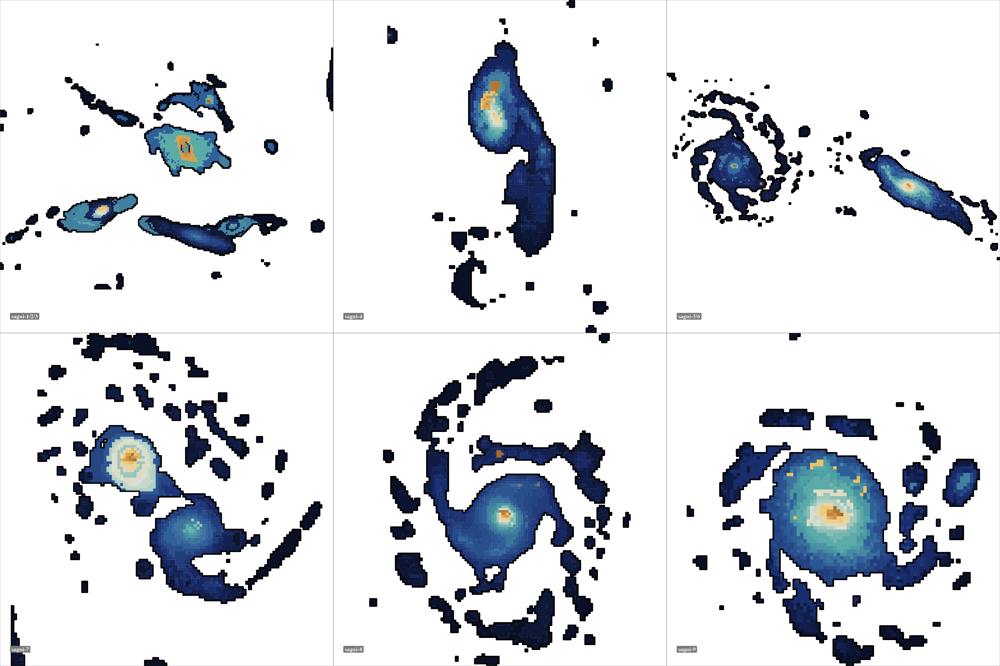
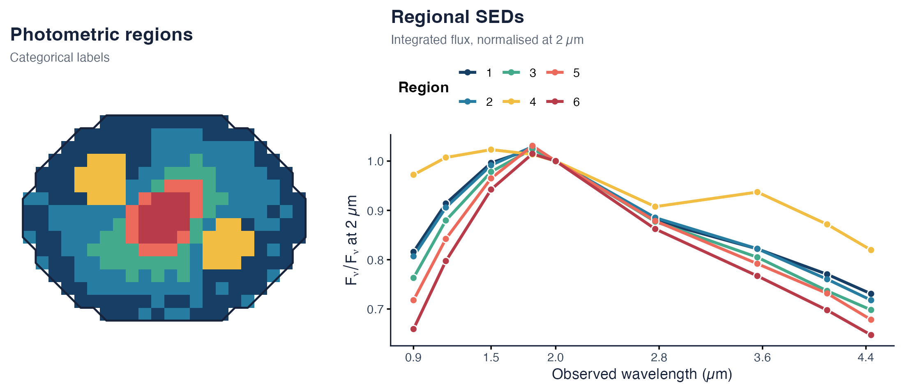

Photometric SED segmentation for resolved galaxies.
Sagui turns a PSF-matched multiband cube into spatially coherent regions and flux-preserving regional spectral energy distributions (SEDs). It supports exact Ward clustering for compact data and sparse-graph Ward clustering for larger images.
The methods and first applications are described by de Souza et al. (2026), sagui: SED-based segmentation of multiband Galaxy images – application to JADES in GOODS-South, arXiv:2604.18812.

- PrepareAlign the images, match the PSF, and assemble the band axis.
- SupportDefine which pixels belong to the astronomical source.
- SegmentGroup photometric SEDs with exact or sparse Ward clustering.
- MeasureExport regional fluxes and uncertainties for SED fitting.
Install
install.packages("remotes")
remotes::install_github("RafaelSdeSouza/sagui")
library(sagui)Quick start
This deterministic example simulates a small resolved galaxy in nine near-infrared bands. Its pixels mix bulge, disc, and two star-forming-knot SED profiles inside an elliptical support. The simulation is illustrative; it is not an observational data product.
set.seed(42)
bands <- c(0.90, 1.15, 1.50, 1.82, 2.00, 2.77, 3.56, 4.10, 4.44)
nx <- ny <- 24L
xy <- expand.grid(x = seq_len(nx), y = seq_len(ny))
dx <- xy$x - 12.5
dy <- xy$y - 12.5
radius <- sqrt((dx / 1.10)^2 + (dy / 0.78)^2)
support <- matrix((dx / 11)^2 + (dy / 8.3)^2 <= 1, nx, ny)
profiles <- rbind(
bulge = c(0.58, 0.78, 1.02, 1.16, 1.14, 0.98, 0.82, 0.72, 0.66),
disc = c(0.82, 0.94, 1.04, 1.08, 1.05, 0.92, 0.84, 0.78, 0.74),
knot1 = c(1.18, 1.11, 1.02, 0.96, 0.93, 0.88, 0.98, 0.91, 0.86),
knot2 = c(1.08, 1.04, 0.99, 0.95, 0.94, 0.91, 1.05, 0.99, 0.93)
)
weights <- cbind(
exp(-(radius / 3.0)^2),
exp(-radius / 8.5),
exp(-((dx - 4.5)^2 + (dy + 1.8)^2) / 5),
exp(-((dx + 4.0)^2 + (dy - 2.6)^2) / 6)
)
weights <- weights / rowSums(weights)
surface_brightness <- 0.12 + 1.35 * exp(-radius / 8)
flux <- surface_brightness * (weights %*% profiles)
flux <- flux + matrix(rnorm(length(flux), sd = 0.012), nrow(flux))
cube <- array(flux, dim = c(nx, ny, length(bands)))
for (b in seq_along(bands)) cube[, , b][!support] <- NA_real_
seg <- segment_regions(
input = cube,
Ncomp = 6,
use_starlet_mask = FALSE,
cluster_pretransform = "none"
)
regional <- extract_region_sed(
cube = cube,
labels = seg$cluster_map,
band_values = bands,
sigma_band = rep(0.012, length(bands))
)
The regional table is the hand-off product for downstream fitting:
| region | lambda (µm) | flux | flux error | pixels |
|---|---|---|---|---|
| 1 | 0.90 | 51.3139 | 0.1235 | 106 |
| 1 | 1.15 | 57.4866 | 0.1235 | 106 |
| 1 | 1.50 | 62.6675 | 0.1235 | 106 |
These are deterministic simulation outputs, not observational measurements.
Core API
Use segment_regions() for exact Ward clustering and segment_regions_large() when the all-pairs distance matrix is too large. Both return the categorical region map and provenance-relevant settings used by the segmentation.
About
Sagui is part of the COIN Toolbox. Please cite the software paper with citation("sagui"). Limitations and the status of each paper-reproduction asset are stated in the examples guide.